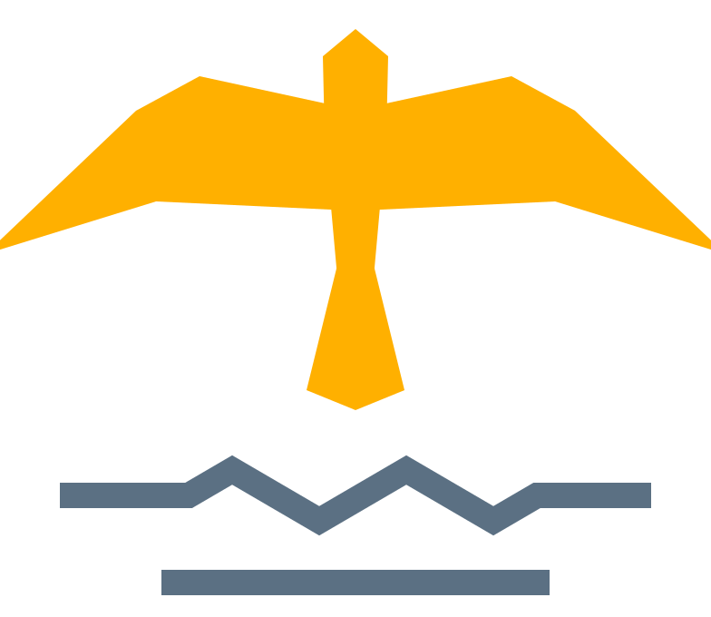
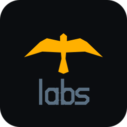
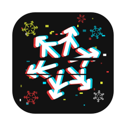
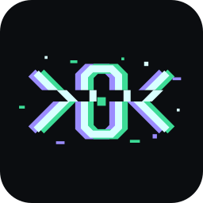
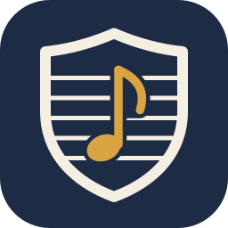
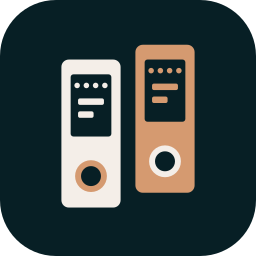
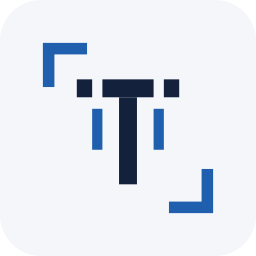

free licences
Everything we publish is open source under an OSI-approved licence. Read it, change it, ship it.

falkensee:~$ whoami
falkOSS – Falcon Lake Open Source Software builds and maintains open-source tools for people who build things: open code under open licences, developed in public, everything included, no telemetry. A non-profit (gUG, in formation) from the town next to Berlin.


The home for our smaller projects: plugins, tools, forks and experiments that don't need an organisation of their own. Same principles, smaller scope – what outgrows labs gets a home of its own.

Clean, disposable NixOS and macOS VMs on Apple silicon – declared in Nix as recipes, started from the menu bar or the CLI. Share recipes, not machines.

One core for email, identity and storage: an account is created once and is at the same time the mailbox, the single sign-on login and the owner of files. Self-hostable, in Rust.

A self-hosted sheet music library for music schools, orchestras and ensembles: upload scores, split them into parts, and every player sees exactly their own – on phone, tablet or music stand, online and offline.

Free accounting for everyone – from private finances to freelancers, companies and non-profits. Local first, works offline and synchronises end-to-end encrypted; as an app, in the terminal or behind a server.

An open protocol for accounting data in Europe: one model for bookings, receipts, invoices, reports and filings that the existing European formats translate into and out of. Anyone may implement it – spezado is the first.
Everything we publish is open source under an OSI-approved licence. Read it, change it, ship it.
The free version is the whole product: one edition, every feature, for everyone. We charge for work – hosting, support, development, teaching – never for unlocking.
Our software does not phone home. This page loads nothing from other servers and sets no cookies.
Issues, plans, reviews and decisions happen in public. Anyone can follow along, ask and join.
A charitable company (gUG) in formation – money goes into the software, never into profits.
FAlcon LaKe → FALK FALKensee → FALK FALK + OSS → falkOSS Falcon Lake Open Source Software = FLOSS
Falkensee is our town: Falke is German for falcon, See for lake. FLOSS is free/libre and open source software.
Code, recipes, docs, translations – every project has its contributing guide. Start on GitHub.
Donations open once the gUG is registered and recognised as charitable.
Open an issue or a discussion on GitHub, or write to support@falkoss.org.